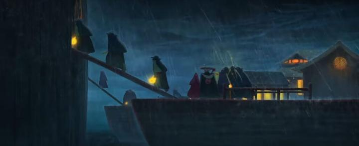

It's interesting to see movie theatres in Canada and the US slowly listing movies from India and China, both massive film markets in their own right, but otherwise almost entirely unknown to Western filmgoers. Entirely by chance, I came across a news article about a 2024 animated movie from China, "The Storm," receiving a limited release that very week, including in a theatre not far from me. If not for that article, I would have completely missed the film and be none the wiser. But I caught it, buying a ticket at the mainstream cineplex, going to a screen at the far end of the hallway, completely empty, with the projector displaying the film and trailers at the wrong aspect ratio (squashed down, to make everything look fat, which may or may not have been true to the feature film). OK, maybe theatres weren't taking the "screening quality" of these international movies seriously, but better than not showing it at all."The Storm" might have a generic-sounding title, but it has an interesting premise. It starts with a young boy and a man, named "Bun" and "Biggie," wandering through the ruins of an abandoned town. Biggie acts as the boy's guardian after finding him abandoned, but being an accused criminal himself, the two are never able to settle peacefully, forcing them to forage for food and take shelter where there aren't people around. Biggie tells the boy of the legend of a great Black Ship that sunk with treasures aboard - surely, if they could just find it in the river nearby, they would be rich! But one fateful day, other parties show up to the abandoned town: a group from the King's royal guard, and a gang of cult warriors, each also seeking the boat. And the boat suddenly appears in the river, fully in tact, with the passengers all turned to monsters by a fluid-like parasite swarming the area. Everyone has their own motivations to claim the boat for themselves, but it might be more dangerous than they expected.There's a clear inspriation from Studio Ghibli's movies, namely "Sprited Away" and perhaps "Princess Mononoke," where the hero (the boy Bun) finds himself in a complex new world run by supernatural dangers. Quickly, Biggie gets captured and bitten by one of the boat's monsters, and Bun spends most of the movie trying to rescue him, and ultimately, heal the bite (otherwise, it curses the victim to become a monster themself). Bun is the only one with pure motivations, to save his so-called father, while everyone else focuses on greed or destruction. Even Biggie isn't immune, seeking a way to get the boat's treasures at his own peril, even though he does so for Bun's sake rather than pure greed. The story gets a little repetitive between Bun and Biggie trying to rescue each other, but it builds up suspense as to how their story will end. One might expect this to become an increasingly complex web of conflicts like a heist movie, but the supernatural wonders of the boat take some focus away from that. That's not a bad thing, and helps give the movie an identity of its own, while still allowing for that web to come to a head in the climax (a late-movie shot pans through the interios of the boat for more than a minute with no cuts, passing by dozens of characters running and fighting for their lives). The scale feels large, despite the setting being entirely on the one boat, in a small lake near a tiny abandoned town. There are brief surprising moments of violence and bloodshed - while these are quick enough that young kids might not notice it, this was probably meant for children ten and up.  Ultimately, beyond the humour and excitement, there's a touching story between Biggie and Bun, and what they would both do for each other. From the recent animated films I've seen from China, they seem quite good at pushing the emotional aspect for their endings. It might be a bit tiring if you see a lot of these in succession (I don't want EVERY movie I see to make me cry), but it's impressive that "The Storm" is able to pull it off so effectively. The motivations of the King and of the monsters on the ship were either too simple or too complex to fully grasp or appreciate, but otherwise, this was a surprisingly well-crafted story. Visually, "The Storm" is fascinating and refreshing to look at. Again, there's an influence from Ghibli for great monster designs (that appear both cute and dangerous at the same time), as well as Chinese-ink-painting styles for the backgrounds, and European comic-book styles for the human characters. It isn't all consistent, but I was frequently in awe at the beauty of the background shots and of some scenes of human characters at a distance. Up close, the human characters look a bit overly cartoonish in their design, which detracts from the scenes they're in. Animation is even less consistent... most of the time it's great 2D animation, but there are frequent instances where it looks like a characters body or head is simply shifted across the screen to portray movement, like a simple translation in vector-art software. It's obvious and cheapens the animation, a shame because this probably amounts to less than 60 seconds of footage - if they could go back and redo those shots, the animation would be a pillar of pride for the artists. At least the music and acting (Chinese, no English dub at the time) were good. "The Storm" manages to feel unique, yet accessible and complete in its story and art. It amazes me to think how close I was to completely missing it, and possibly never even knowing it existed. Hopefully, you'll get a chance to discover it for yourself.
- "Ani" More reviews can be found at : https://2danicritic.github.io/ Previous review: review_The_Spine_of_Night Next review: review_The_Swan_Princess